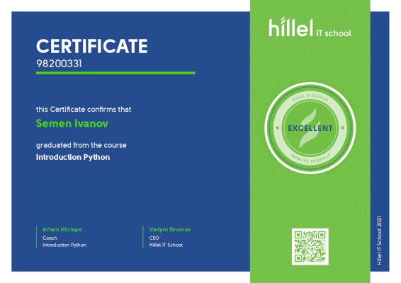

years of full experience coding on Python and HTML
Here is my education history:

Aug 2002- Jun 2004
Donetsk National University
GeneralAssociate's degree, Foreign Languages and Literatures
Grade: Attestation for «Upper – Intermediate» with grade of “C”
Oxford university Press in full volume 650 hours with attestation for «Upper – Intermediate»
Far far away, behind the word mountains, far from the countries.
Sep 2004- Jun 2009
Donetsk National Technical University
Bachelor of Engineering - BE, Machinebuilding Technology
Faculty of Mechanics, Donetsk National Technical University, Donetsk
Sep 2009- Jun 2010
Donetsk National Technical University
Specialist in Engineering Technology, Quality Standardization Certification
Practice in Donetsk Center of Certification and Metrology (DonCSM)Activities and societies: Practice in Donetsk Center of Certification and Metrology (DonCSM)
Quality Standardization Certification

Jan 2021- May 2021
Hillel IT School
Certificate 98200331Graduated from the course Introduction Python with mark Excellent
The certificate of completion of education is attached to a file below
I have the privilege to work with these cool companies.
2008 - Present
XYZ Inc.
Far far away, behind the word mountains, far from the countries.
2004-2008
Previous Ltd Co.
Far far away, behind the word mountains, far from the countries.
1999-2004
Previous Ltd Co.
Far far away, behind the word mountains, far from the countries.
Here you can find my programming and codding skills